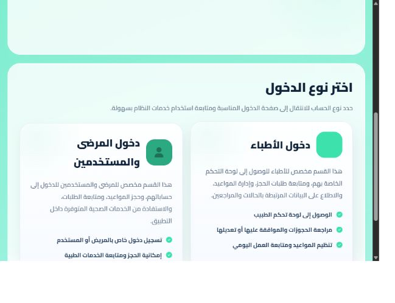

01
Patient journey
Choose the patient entry point, then sign in to book a medical appointment or follow up on an existing request.
01 / Digital health
Two clear paths to healthcare appointments.
Amal gives patients and doctors separate entry points for booking and managing healthcare appointments.
Open Amal
The homepage helps visitors choose the right path before signing in. Each path gives the user a clear next step and explains the actions available to them.
01
Choose the patient entry point, then sign in to book a medical appointment or follow up on an existing request.
02
Choose the doctor entry point to access the dashboard for reviewing bookings, managing appointment requests, and organizing the daily schedule.
